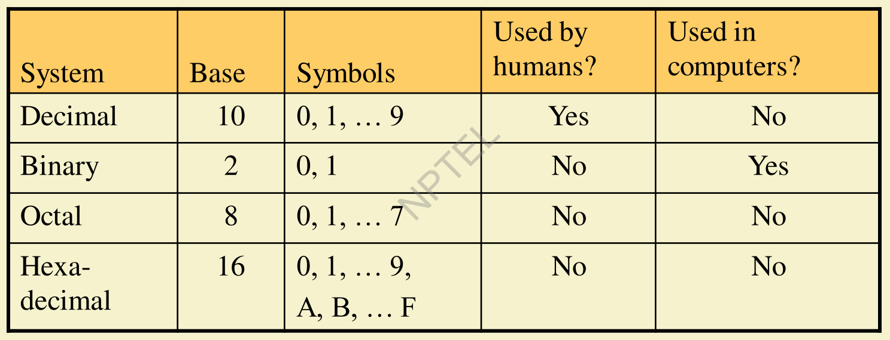
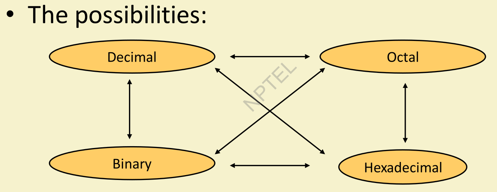
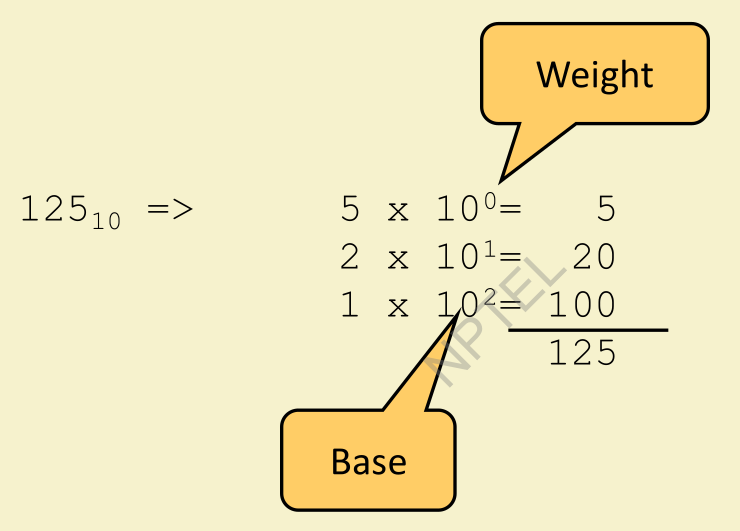
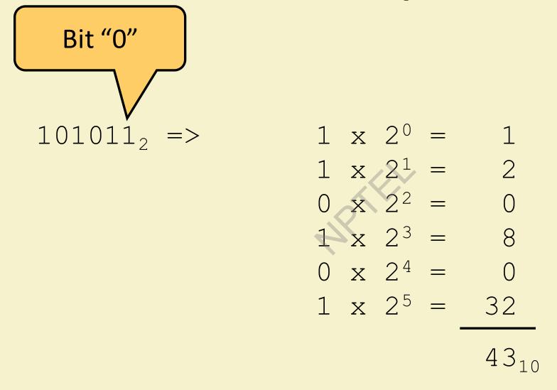
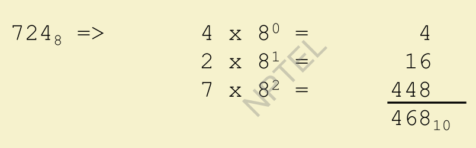
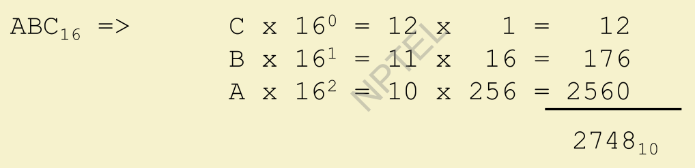
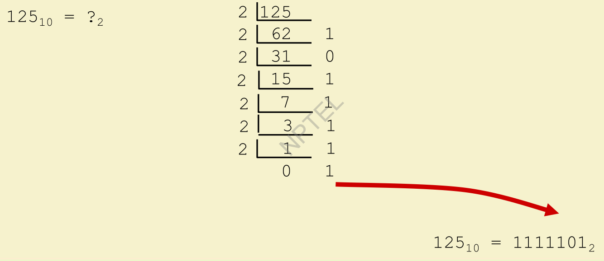
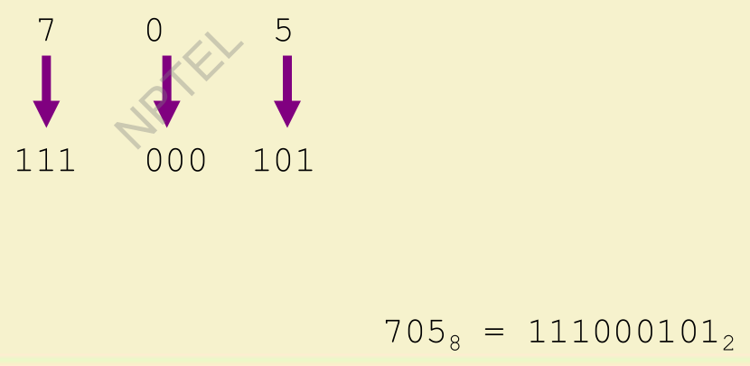
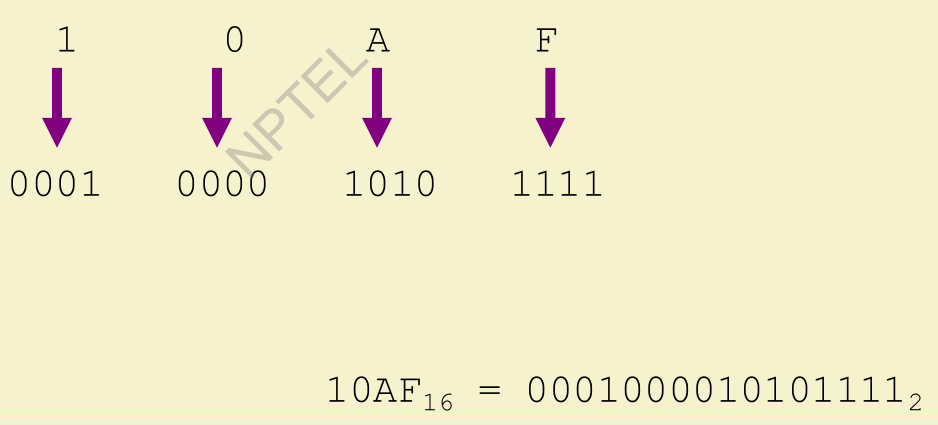

Number Systems
Common Number Systems
Any number system has 2 important components in it.
- Base
- Symbols

- Whenever we are refering to a certain bit processor like 16 bit, 32 bit, 64 bit processor
=>It essential means a 16 bit architecture can work or store upto \(2^{16}\) values.
1 to 25 Numbers in different Number Systems
| Decimal | Binary | Octal | Hexadecimal |
|---|---|---|---|
| 0 | 0 | 0 | 0 |
| 1 | 1 | 1 | 1 |
| 2 | 10 | 2 | 2 |
| 3 | 11 | 3 | 3 |
| 4 | 100 | 4 | 4 |
| 5 | 101 | 5 | 5 |
| 6 | 110 | 6 | 6 |
| 7 | 111 | 7 | 7 |
| 8 | 1000 | 10 | 8 |
| 9 | 1001 | 11 | 9 |
| 10 | 1010 | 12 | A |
| 11 | 1011 | 13 | B |
| 12 | 1100 | 14 | C |
| 13 | 1101 | 15 | D |
| 14 | 1110 | 16 | E |
| 15 | 1111 | 17 | F |
| 16 | 10000 | 20 | 10 |
| 17 | 10001 | 21 | 11 |
| 18 | 10010 | 22 | 12 |
| 19 | 10011 | 23 | 13 |
| 20 | 10100 | 24 | 14 |
| 21 | 10101 | 25 | 15 |
| 22 | 10110 | 26 | 16 |
| 23 | 10111 | 27 | 17 |
| 24 | 11000 | 30 | 18 |
| 25 | 11001 | 31 | 19 |
You might be confussed at the Binary, Octal and Hexadecimal Number Systems. Don’t worry! We will learn about these in detail.
Quick Example:
\[25_{10} = 11001_2 = 31_8 = 19_{16}\]
We will do following conversions among different bases

Conversion To Decimal System
1) Decimal to Decimal
Integer:
\[125 = 125_{10} = \underline{1} * (10^2) + \underline{2} * 10^1) + \underline{5} * (10^0)\]
\[= \underline{1} * (Hundreds Place) + \underline{2} * (Tens Place) + \underline{5} * (Ones Place)\]
\[= 100 + 20 + 5 =125_{10}\]

Fraction:
\[ 3.14 = \underline{3}\times 10^0 + \underline{1}\times 10^{-1} + \underline{4}\times 10^{-2} \] \[= 3 + 0.1 + 0.04 = 3.14\]
4 x 10^-2 = 0.04
1 x 10^-1 = 0.1
3 x 10^0 = 3.0
------
3.14
------2) Binary to Decimal
Technique:
- Multiply each bit by (2^n), where n is the “weight” of the bit
- The weight is the position of the bit, starting from 0 on the right
- Add the results
Integer:
\[101011_2 = \underline{1} * (2^5) + \underline{0} * (2^4) + \underline{1} * (2^3) + \underline{0} * (2^2) + \underline{1} * (2^1) + \underline{1} * (2^0)\]
\[= \underline{1} * (32) + \underline{0} * (16) + \underline{1} * (8) + \underline{0} * (4) + \underline{1} * (2) + \underline{1} * (1)\]
\[= 32 + 0 + 8 + 0 + 2 + 1 = 43 = 43_{10}\]

Fraction:
\[10.1011_2 = \underline{1}\times 2^1 + \underline{0}\times 2^0 + \underline{1}\times 2^{-1} + \underline{0}\times 2^{-2} + \underline{1}\times 2^{-3} + \underline{1}\times 2^{-4}\]
\[= \underline{1} * (2) + \underline{0} * (1) + \underline{1} * (0.5) + \underline{0} * (0.25) + \underline{1} * (0.125) + \underline{1} * (0.0625)\]
\[= 2 + 0 + 0.5 + 0 + 0.125 + 0.0625 = 2.6875\] \[\therefore 10.1011_2 = 2.6875_{10}\]
1 0 . 1 0 1 1 =
1 x 2^-4 = 0.0625
1 x 2^-3 = 0.125
0 x 2^-2 = 0.0
1 x 2^-1 = 0.5
0 x 2^0 = 0.0
1 x 2^1 = 2.0
----------
2.6875
----------3) Octal to Decimal
Technique:
- Multiply each bit by (8^n), where n is the “weight” of the bit
- The weight is the position of the bit, starting from 0 on the right
- Add the results
Integer:
\[724_8 = \underline{7} * (8^2) + \underline{2} * (8^1) + \underline{4} * (8^0)\]
\[= \underline{7} * (64) + \underline{2} * (8) + \underline{4} * (1)\]
\[= 448 + 16 + 4 = 468 = 468_{10}\]

Fraction:
\[35.631_8 = (?)_{10}\]
\[35.631_8 = \underline{3} * (8^1) + \underline{5} * (8^0) + \underline{6}\times 8^{-1} + \underline{3}\times 8^{-2} + \underline{1}\times 8^{-3}\] \[= \underline{3} * (8) + \underline{5} * (1) + \underline{6} * (0.125) + \underline{3} * (0.015625) + \underline{1} * (0.001953125)\] \[= 24 + 5 + 0.75 + 0.046875 + 0.001953125\] \[= 29.798828125 \approx 29.8_{10}\]
\[\therefore 35.631_8 = 29.8_{10}\]
35.631 =
1 x 8^-3 = 0.001953125
3 x 8^-2 = 0.046875
6 x 8^-1 = 0.75
5 x 8^0 = 5.0
3 x 8^1 = 24.0
----------
29.798828125
----------4) Hexadecimal to Decimal
Technique:
- Multiply each bit by (16^n), where n is the “weight” of the bit
- The weight is the position of the bit, starting from 0 on the right
- Add the results
Integer:
\[ABC_{16} = \underline{A} * (16^2) + \underline{B} * (16^1) + \underline{C} * (16^0)\]
\[= \underline{10} * (16^2) + \underline{11} * (16^1) + \underline{12} * (16^0)\]
\[= \underline{10} * (256) + \underline{11} * (16) + \underline{12} * (1)\]
\[= 2560 + 176 + 12 = 2748 = 2748_{10}\]

Fraction:
\[2A.7C_{16} = (?)_{10}\]
\[2A.7C_{16} = \underline{2} * (16^1) + \underline{A} * (16^0) + \underline{7}\times 16^{-1} + \underline{C}\times 16^{-2}\] \[= \underline{2} * (16) + \underline{10} * (1) + \underline{7} * (0.0625) + \underline{12} * (0.00390625)\] \[= 32 + 10 + 0.4375 + 0.046875\] \[= 42.484375_{10}\]
\[\therefore 2A.7C_{16} = 42.484375_{10}\]
2A.7C =
C x 16^-2 = 0.046875
7 x 16^-1 = 0.4375
A x 16^0 = 10.0
2 x 16^1 = 32.0
----------
42.484375
----------Conversion To Binary System
1) Decimal to Binary
Technique: Divide by two (2), keep track of the remainder.
Integer:
\(\boldsymbol{125_{10} = ( )_2}\)
2)125(62
124
---
1 ==> This is the right most bit. = _ _ _ _ _ _ 1
2)62(31
62
--
0 ==> This is the next right most bit. = _ _ _ _ _ 0 1
2)31(15
30
--
1 ==> This is the next right most bit. = _ _ _ _ 1 0 1
2)15(7
14
--
1 ==> This is the next right most bit. = _ _ _ 1 1 0 1
2)7(3
6
--
1 ==> This is the next right most bit. = _ _ 1 1 1 0 1
2)3(1
2
--
1 ==> This is the next right most bit. = _ 1 1 1 1 0 1
2)1(
If "Dividend" is 0 or 1, then it is last step.
==> Dividend is the left most bit. = 1 1 1 1 1 0 1\(\boldsymbol{Result: 125_{10} = ( 1 1 1 1 1 0 1 )_2}\)

Fraction:
\(\boldsymbol{3.14579_{10} = ( )_2}\)
Technique: For integer part, divide by two (2), keep track of the remainder.
For fractional part, multiply by two (2), keep track of the integer result.
3.14579
For integer part: 3 = 11 in binary
For fractional part: 0.14579
0|.14579
| x2
---------
1st bit after decimal 0|.29158 ==> 11.0
| x2
---------
2nd bit after decimal 0|.58316 ==> 11.00
| x2
---------
3rd bit after decimal 1|.16632 ==> 11.001
| x2
---------
4th bit after decimal 0|.33264 ==> 11.0010
| x2
---------
5th bit after decimal 0|.66528 ==> 11.00100
| x2
---------
6th bit after decimal 1|.33056 ==> 11.001001
The fractional part continues indefinitely, but we stop after six binary fractional bits:
\[\therefore 3.14579_{10} \approx 11.001001....._2\]
In actual computers, a 32-bit IEEE 754 float stores about 24 bits of binary precision (roughly 7 significant decimal digits).
If greater precision is required, a 64-bit IEEE 754 double is commonly used, which provides about 15-16 significant decimal digits.
2) Octal to Binary (Using 2 Methods)
A) Convert Octal to Decimal, then Decimal to Binary.
\[705_8 = ?_2\]
\[705_8 = \underline{7} * (8^2) + \underline{0} * (8^1) + \underline{5} * (8^0) = 452_{10}\]
\[452_{10} = 111000101_2\]
\[\therefore 705_8 = 111000101_2\]
B) Convert each octal digit to a 3-bit equivalent binary representation. ( Fastest Way)
Technique: Convert each octal digit to a 3-bit equivalent binary representation.
Integer:
\[705_8 = ?_2\]
\[
\textbf{Binary Equivalent of: } 7_8 = 111_2,\; 0_8 = 000_2,\; 5_8 = 101_2.
\]
\[705_8 = (111) (000) (101) _2 = 111 000 101 _2\]

Fraction:
\(527.34_8 = ( )_2\)
\[527.34_8 = (101) (010) (111) . (011) (100) _2 = 101010111.011100_2\]
3) Hexadecimal to Binary (Using 2 Methods)
A) Convert Hexadecimal to Decimal, then Decimal to Binary.
\[10AF_{16} = ?_2\]
\[10AF_{16} = \underline{1} * (16^3) + \underline{0} * (16^2) + \underline{A} * (16^1) + \underline{15} * (16^0) = 4271_{10}\]
\[4271_{10} = 0001 0000 1010 1111_2\]
\[\therefore 10AF_{16} = 0001 0000 1010 1111_2\]
B) Convert each hexadecimal digit to a 4-bit equivalent binary representation. ( Fastest Way)
Technique: Convert each hexadecimal digit to a 4-bit equivalent binary representation.
Integer:
\[10AF_{16} = ?_2\]
\[
\textbf{Binary equivalent of: } 1_{16} = 0001_2,\; 0_{16} = 0000_2,\; A_{16} = 10_{16} = 1010_2,\; F_{16} = 15_{16} = 1111_2.
\]
\[10AF_{16} = (0001) (0000) (1010) (1111)_2 = 0001 0000 1010 1111_2\]

Fraction:
\(3A.F5_{16} = ( )_2\)
\[3A.F5_{16} = (0011) (1010) . (1111) (0101) _2 = 00111010.11110101_2\]
Conversion To Octal System
1) Decimal to Octal
Integer:
\(\boldsymbol{1234_{10} = ?_8}\)
Technique: Divide by eight (8), keep track of the remainder.
8)1234(154
1232
---
2 ==> This is the right most digit. = _ _ _ 2
8)154(19
152
--
2 ==> This is the next right most digit. = _ _ 2 2
8)19(2
16
--
3 ==> This is the next right most digit. = _ 3 2 2
8)2(
If "Dividend" is less than 8, then it is last step.
==> Dividend is the left most bit. = 2 3 2 2\(\boldsymbol{Result: 1234_{10} = ( 2 3 2 2 )_8}\)
Fraction:
\(45.6875_{10} = ?_8\)
Technique: For integer part, divide by eight (8), keep track of the remainder.
For fractional part, multiply by eight (8), keep track of the integer result.
45.6875
For integer part: 45
8 | 45 | 5
| 40 |
------
5 --> Right Most Digit
8 | 5 | Since 5 < 8, we stop here.
| |
-----
45 = 55 in Octal
For fractional part: 0.6875
0|.6875
| x8
---------
1st digit after integer 5|.5000 ==> 55.5
| x8
---------
2nd digit after integer 4|.0000 ==> 55.54
Since the fractional part is now 0.0000, there is no remaining fraction to convert. We stop.\[\therefore 45.6875_{10} = 55.54_8\]
2) Binary to Octal (Using 2 Methods)
\(\boldsymbol{10101_2 = ?_8}\)
A) Convert Binary to Decimal, then Decimal to Octal.
\[\boldsymbol{10101_2 = 21_{10} => 21_{10} = 25_8}\]
B) Group bits in threes, starting on right, then convert to octal digits. ( Fastest Way)
\[10101_2 = 010101_2 = (010) (101)_2 = 25_8\] \[ \textbf{Octal Equivalent of: } 010_2 = 2_8,\; 101_2 = 5_8 . \] \[\therefore 10101_2 = 25_8\]
Fraction:
\[110011.10111_2 = (110) (011) .(101) (110)_2 = 63.56_8\]
3) Hexadecimal to Octal (Using 2 Methods)
A) Convert Hexadecimal to Decimal, then Decimal to Octal.
\[3B4_{16} = ?_8\]
\[3B4_{16} = \underline{3} * (16^2) + \underline{B} * (16^1) + \underline{4} * (16^0) = 948_{10}\]
\[948_{10} = 1664_8\]
\[\therefore 3B4_{16} = 1664_8\]
B) By Grouping Bits ( Fastest Way)
Technique: Convert each hexadecimal digit to a 4-bit equivalent Binary representation. Then group bits in threes, starting from right, then convert to octal digits.
\[3B4_{16} = ?_8\]
\[
\textbf{Binary Equivalent of: } 3_{16} = 0011_2,\; B_{16} = 1011_2,\; 4_{16} = 0100_2 .
\]
\[3B4_{16} = (0011) (1011) (0100)_2 = (001) (110) (110) (100)_2 = 1664_8\]
Fraction:
\[3A.F5_{16} = (0011) (1010) .(1111) (0101)_2 = (111) (010) .(111) (101) (010)_2 = 72.752_8\]
Conversion To Hexadecimal System
1) Decimal to Hexadecimal
Integer:
\(\boldsymbol{1234_{10} = ?_{16}}\)
Technique: Divide by sixteen (16), keep track of the remainder.
16)1234(77
1232
----
2 ==> This is the right most digit. = _ _ 2
16)77(4
64
--
13 (D) ==> This is the next right most digit. = _ D 2
16)4(
If "Dividend" is less than 16, then it is the last step.
==> Dividend is the left most digit. = 4 D 2\(\boldsymbol{Result: 1234_{10} = (4D2)_{16}}\)
Fraction:
\(\boldsymbol{125.6875_{10} = ?_{16}}\)
Technique: For integer part, divide by two (16), keep track of the remainder.
For fractional part, multiply by sixteen (16), keep track of the integer result.
125.6875
For integer part: 125
16 | 125 | 7
| 112 |
-------
13 == D --> Right Most Digit
16 | 7 | Since 7 < 16, we stop here.
| |
-----
125 = 7D in Hexadecimal
For fractional part: 0.6875
0|.6875
| x16
---------
1st digit after integer 11|.0000 ==> 7D.B
Since the fractional part is now 0.0000, there is no remaining fraction to convert. We stop.\[\therefore 125.6875_{10} = 7D.B_{16}\]
2) Binary to Hexadecimal
Integer:
\(\boldsymbol{1010111011_2 = ?_{16}}\)
Technique: Group bits in fours, start on right. Convert to hexadecimal digits
\[1010111011_2 = ?_{16}\] \[ \textbf{Hexadecimal equivalent of: } 0010_2 = 2_{16}, \; 1011_2 = B_{16} \] \[\therefore 1010111011_2 = 2BB_{16}\]
Fraction:
\(\boldsymbol{10110110.111101_2 = ?_{16}}\)
\[10110110.111101_2 = (1011) (0110) .(1111) (0100)_2 = B6.F4_{16}\]
3) Octal to Hexadecimal
Integer:
\(\boldsymbol{1076_8 = ?_{16}}\)
Technique: Use binary as an intermediate
\[1076_8 = ?_{16}\]
\[1076_8 = (001) (000) (111) (110)_2 = (0010) (0011) (1110)_2\] \[ \textbf{Hexadecimal equivalent of: } 0010_2 = 2_{16}, \; 0011_2 = 3_{16}, \; 1110_2 = E_{16} \]
\[\therefore 1076_8 = 23E_{16}\]
Fraction:
\(\boldsymbol{357.64_8 = ?_{16}}\)
\[357.64_8 = (011) (101) (111) .(110) (100)_2 = (1110) (1111) .(1101)_2 = EF.D_{16}\]
Exercise — Convert Between Number Systems
| Decimal | Binary | Octal | Hexadecimal |
|---|---|---|---|
| 45 | |||
| 10110110 | |||
| 526 | |||
| 2D9 | |||
| 158.625 | |||
| 100011011.101 | |||
| 145.34 | |||
| 7E.AC |
Solution
| Decimal | Binary | Octal | Hexadecimal |
|---|---|---|---|
| 45 | 101101 | 55 | 2D |
| 182 | 10110110 | 266 | B6 |
| 342 | 101010110 | 526 | 156 |
| 729 | 1011011001 | 1331 | 2D9 |
| 158.625 | 10011110.101 | 236.5 | 9E.A |
| 283.625 | 100011011.101 | 433.5 | 11B.A |
| 101.4375 | 1100101.0111 | 145.34 | 65.7 |
| 126.671875 | 1111110.101011 | 176.53 | 7E.AC |
Common Powers
Base 10 (SI Prefixes)
| Power | Prefix | Symbol | Value |
|---|---|---|---|
| \(10^{-15}\) | femto | f | \(0.000000000000001\) |
| \(10^{-12}\) | pico | p | \(0.000000000001\) |
| \(10^{-9}\) | nano | n | \(0.000000001\) |
| \(10^{-6}\) | micro | \(\mu\) | \(0.000001\) |
| \(10^{-3}\) | milli | m | \(0.001\) |
| \(10^{0}\) | — | — | \(1\) |
| \(10^{3}\) | kilo | k | \(1,\!000\) |
| \(10^{6}\) | mega | M | \(1,\!000,\!000\) |
| \(10^{9}\) | giga | G | \(1,\!000,\!000,\!000\) |
| \(10^{12}\) | tera | T | \(1,\!000,\!000,\!000,\!000\) |
| \(10^{15}\) | peta | P | \(1,\!000,\!000,\!000,\!000,\!000\) |
| \(10^{18}\) | exa | E | \(1,\!000,\!000,\!000,\!000,\!000,\!000\) |
Base 2 (Binary Multiples)
| Power | Prefix | Symbol | Value |
|---|---|---|---|
| \(2^{10}\) | kilo | k | \(1,\!024\) |
| \(2^{20}\) | mega | M | \(1,\!048,\!576\) |
| \(2^{30}\) | giga | G | \(1,\!073,\!741,\!824\) |
| \(2^{40}\) | tera | T | \(1,\!099,\!511,\!627,\!776\) |
| \(2^{50}\) | peta | P | \(1,\!125,\!899,\!906,\!842,\!624\) |
| \(2^{60}\) | exa | E | \(1,\!152,\!921,\!504,\!606,\!846,\!976\) |
Note: In CS courses, memory sizes are often approximated using binary powers.
Modern Systems Follow IEC (International Electrotechnical Commission) Binary Prefixes
| Power | IEC Prefix | Symbol | Value |
|---|---|---|---|
| \(2^{10}\) | kibi | Ki | \(1,\!024\) |
| \(2^{20}\) | mebi | Mi | \(1,\!048,\!576\) |
| \(2^{30}\) | gibi | Gi | \(1,\!073,\!741,\!824\) |
| \(2^{40}\) | tebi | Ti | \(1,\!099,\!511,\!627,\!776\) |
| \(2^{50}\) | pebi | Pi | \(1,\!125,\!899,\!906,\!842,\!624\) |
| \(2^{60}\) | exbi | Ei | \(1,\!152,\!921,\!504,\!606,\!846,\!976\) |
Note: Modern operating systems and standards often use KiB, MiB, GiB, TiB for binary multiples, while KB, MB, GB, TB denote decimal multiples (powers of 10). However, many computer architecture and digital electronics courses continue to use \(\mathrm{KB}=2^{10}\) bytes , \(\mathrm{MB}=2^{20}\) bytes and \(\mathrm{GB}=2^{30}\) bytes for simplicity.
Binary Addition
A. Two 1-Bit Values
| A | B | A+B |
|---|---|---|
| 0 | 0 | 1 |
| 0 | 1 | 1 |
| 1 | 0 | 1 |
| 1 | 1 | 10 |
\[(10)_2 = (2)_{10}\]
1
+ 1
-------
1 0
|
v
This 1 is carry.B. Two n-Bit Values
Add the individual bits and propagate the carry
|1| --> carry from previous sum 1 + 1
1 0 1 0 1 2 1
1 1 0 0 1 2 5
------------- -----
1 0 1 1 1 0 == 3 6 We can convert each binary number to decimal and add. Result is same.
------------- -----
Binary Multiplication
A. Decimal
3 5
x 1 0 5
----------
1 7 5
0 0 0 +
3 5 + +
----------
3 6 7 5
---------- B. Two 1-Bit Values
| A | B | AxB |
|---|---|---|
| 0 | 0 | 0 |
| 0 | 1 | 0 |
| 1 | 0 | 0 |
| 1 | 1 | 1 |
C. Two n-Bit Values
Like in decimal, we use the same method:
1 1 1 0 1 4
x 1 0 1 1 x 1 1
---------------- ------
1 1 1 0 1 4
1 1 1 0 + 1 4 +
0 0 0 0 + +
1 1 1 0 + + +
------------------- --------
1 0 0 1 1 0 1 0 == 1 5 4 For simplicity & fast, convert binary to decimal and multiply then convert to binary. Result is same.
------------------- --------Negative Numbers
How to represent the negative numbers?
3 distinct ways to represent the negative numbers in computer systems.
1. Sign and Magnitude Representation
One bit for sign
- 0 = Positive
- 1 = Negative
Rest of the bits for Magnitude.
Range: \(-(2^{n-1} -1)\) to \(+(2^{n-1}-1)\) where n = no. of bits
Example:
Normal System: For representing range 0-15, we need 4 bits and we can’t represent negative numbers.
-----------------
| | | | |
-----------------
4 3 2 1 = Bit Wise PositionSigned System: For representing range 0-15, we need 5 bits (1 bit for sign & 4 bits for values), 5th bit is called “sign bit”.
We can represent negative numbers just by fliping the sign bit from 0 to 1.
---------------------
| | | | | |
---------------------
5 4 3 2 1 = Bit Wise Position2. One’s Complement Representation
Technique: For negative number in 1’s complement representation, we just flip the bits of a positive value to get negative value.
Range: \(-(2^{n-1} -1)\) to \(+(2^{n-1}-1)\) where n = no. of bits
Example:
+5 ==> 0 1 0 1
| | | | Bits are flipped
v v v v
-5 ==> 1 0 1 0
Therefore,
+5 ==> 0101
-5 ==> 1010Formula for 1’s complement: \(f(x) =2^n -1 -x\)
Recovery: If 1’s complement is given and to get the original number, apply 1’s complement on “given 1’s complement”.
Note: 1’s complement hardware is easy to implement, it is just not gate (also called inverters).
3. Two’s Complement Representation
Technique: Addition of 1’s complement and one produces the two’s complement.
Range: \(-2^{n-1}\) to \(+(2^{n-1}-1)\) where n = no. of bits
Example:
+5 = 0101
-5 = ? in 2's complement
+5 ==> 0 1 0 1
| | | | Bits are flipped
v v v v
-5 ==> 1 0 1 0
-5 = 1's complement of 5 + 1 = 1010 + 1 = 1011
Therefore, in 2's complement
+5 ==> 0101
-5 ==> 1011
In simple words, 2's complement = 1's complement + 1 Formula for 2’s complement: \(f(x) =2^n -x\)
Recovery: If 2’s complement is given and to get the original number, apply 2’s complement on “given 2’s complement number”.
Note: Signed and 1’s complement have +0 and -0 in their range. 2’s complement have only +0 in the range.
Floating Point Representation
vda